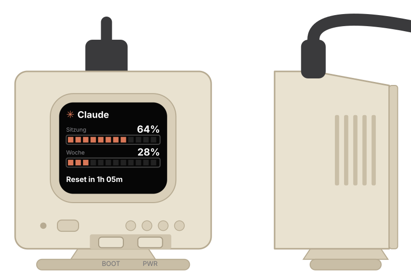

Claude Usage Monitor
Ein Mini-Monitor im 90er-Look für deinen Schreibtisch. Er zeigt dein Claude-Limit: Sitzung, Woche und wann es zurückgesetzt wird.A tiny 90s-style monitor for your desk. It shows your Claude limits: session, week and when they reset.

Teile kaufenBuy the parts
Board mit Display und Akku, zusammen ca. 35 €. Dazu ein USB-C-Kabel.Board with display and battery, about €35 together. Plus a USB-C cable.
Gehäuse druckenPrint the case
Vier Teile, eine Farbe, PLA, 0,2 mm, 15 %, ohne Stützen. Wähle deine Variante:Four parts, one colour, PLA, 0.2 mm, 15 %, no supports. Pick your variant:
„direkt“ · empfohlen"direkt" · recommended
Kabel oben, jedes USB-C-Kabel passt.Cable on top, any USB-C cable fits.
„hinten“"hinten" · rear
Kabel hinten, braucht ein 90°-Winkelkabel.Cable at the back, needs a 90° angled cable.
Software aufspielenInstall the software
Board per USB-C an den Computer stecken und in Chrome oder Edge den Knopf zu deinem Gehäuse klicken. Die Software ist gleich, nur das Bild wird passend gedreht. Die Anzeige erscheint in der oben gewählten Sprache.Connect the board via USB-C and, in Chrome or Edge, click the button for your case. The software is the same, only the picture is rotated to fit. The display uses the language selected above.
Gerät nicht gefunden? BOOT halten, RST kurz drücken, BOOT loslassen.Device not found? Hold BOOT, tap RST, release BOOT.
ZusammenbauenAssemble
- Akku-Polung prüfen:Check battery polarity: rot an +.red to +.
- Tasten einsetzen, Board quer mit Display nach vorne einlegen.Insert the buttons, place the board sideways with the screen to the front.
- Akku dahinter, Deckel drauf, auf den Fuß stecken.Battery behind it, lid on, mount on the stand.
Mit Claude verbindenConnect to Claude
- Einmalig Claude Code installieren:Install Claude Code once:
irm https://claude.ai/install.ps1 | iex - Einrichtungs-Skript starten, anmelden, „Gerät“ wählen.Run the setup script, log in, choose "device".
- WLAN UsageMonitor-Setup wählen, dein WLAN und den Token eintragen.Join Wi-Fi UsageMonitor-Setup, enter your Wi-Fi and the token.
BedienungButtons
| PWR | halten = einschalten (Akku)hold = turn on (battery) |
| BOOT | kurz = neu laden · 3 s = aus · 10 s = alles zurücksetzentap = refresh · 3 s = off · 10 s = full reset |
Was ist was? Die Dateien erklärtWhat is what? The files explained
| stl/ | Die Druckdateien. Brauchst du zum Drucken.Print files. Needed for printing. |
| setup/ | Windows-Skript, holt den Claude-Zugang. Einmal pro Gerät.Windows script that fetches the Claude login. Once per device. |
| widget/ | Bonus für das iPhone.Bonus for iPhone. |
| firmware/ | Quellcode der Gerätesoftware. Wird automatisch gebaut und hier mit einem Klick aufgespielt.Source code of the device software. Built automatically and installed here with one click. |
| enclosure/ | Bauplan des Gehäuses. Daraus entstehen die Druckdateien. Nur zum Ändern.Case source. The print files are made from it. Only to change things. |
| .github/ | Bau-Automatik von GitHub. Nichts zu tun.GitHub build automation. Nothing to do. |
Tester gesucht: Die Gerätesoftware ist geschrieben, aber noch nicht an echter Hardware getestet. Wer früher nachbaut, schreibt seine Erfahrungen gern in die Issues.Testers wanted: the device software is written but not yet tested on real hardware. If you build it early, please share your experience in the Issues.